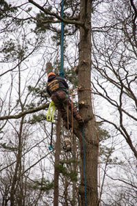
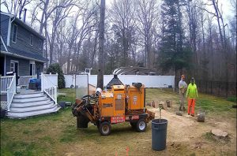
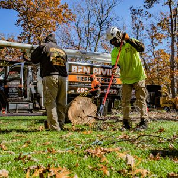

Most homeowners call a tree company when they have a problem that needs solving. Maybe there is a dead tree, a leaning pine, or a storm-damaged limb hanging a little too close to the roofline. Now, the view is better and the property is cleaner, but what exactly happens to the tree? The process that takes place next is as important as the removal itself. Disposal, recycling, mulching, and site restoration are all part of the full-service experience that quality Freehold tree companies like Ben Bivins Tree Experts provide. Understanding the behind-the-scenes of what happens after tree removal can help you appreciate the importance of hiring the right company. Let’s walk through what really happens after the chainsaws go quiet, and how your former tree might be turned into something useful, beneficial, and even beautiful.

Step 1. Breaking It All Down
Tree removal doesn’t happen in one fell swoop. The safest way to handle a large tree is to take it apart in sections.
- Cutting of canopy branches is first
- Mid-level limbs follow next
- Creating manageable logs by sectioning the trunk comes next
- Lastly, our tree experts gather smaller twigs, leaves, and brush separately
This organized breakdown allows us to sort the tree into categories: usable wood, wood chips, mulch material, and waste.
Step 2. Chipping and Mulching
One of the most common and sustainable practices among local tree companies is turning brush and smaller limbs into wood chips or mulch. We run branches and smaller limbs through a chipper. The resulting material is used in landscaping, erosion control, or composting. Additionally, many local homeowners even request to keep the mulch for their own garden use. This eco-friendly step reduces landfill waste and gives your former tree a second life as long as the tree is free from pests and diseases. Rest assured, we’ll let you know if this option is safe for your yard.
Step 3. Trunk and Log Disposal
What about the larger sections of trunk? Not every tree produces usable lumber. However, nearly all of it can be repurposed somehow. We handle these heavier logs in several ways:
- Depending on the species, straight sections may be milled into planks or beams for woodworking
- Whether for resale or donation, most tree companies in Freehold cure and cut hardwood logs for firewood
- If not viable for lumber or firewood, coarse mulch is an option for some logs
- Many municipalities in New Jersey accept tree waste as part of green recycling programs

Stump 4. Stump Grinding or Removal
The stump is the last part to handle. Stump grinding is the most common method. A large blade grinds the stump down 4–6 inches below soil level. Complete stump removal is more labor-intensive, involving excavation of roots and base. The mulch created during stump grinding is left behind or hauled away, depending on the homeowner’s preference. The remaining area can be treated however the homeowner wants. For example, soil can be leveled and seeded, the area can be prepped for a new tree, or a new garden bed can be created.
Step 5. Cleaning the Site
Professionalism doesn’t stop at tree removal. One of the things that sets top-tier Freehold tree companies apart is how they leave your property once the work is complete. After tree breakdown and disposal, our experts rake and clear away all debris as well as blowing clean driveways, sidewalks, and patios. Next, the work area is inspected and equipment tracks are minimized or repaired. The result is that your yard is safer and often healthier than before. Many homeowners are surprised to see how much cleaner and more open their property feels after proper removal and cleanup.

Not All Freehold Tree Companies are Created EqualWhen you’re researching Freehold tree companies, consider more than just the price of the job. Ask what happens after the cut. A truly professional company will provide safe removal, respectful cleanup, and responsible disposal. At Ben Bivins Tree Experts, we’ve built a reputation on quality, honesty, and a commitment to the environment. Whether it’s a hazard tree, a dying oak, or just a backyard spruce that is overgrown—we’ll treat your tree with the care it deserves from start to finish.